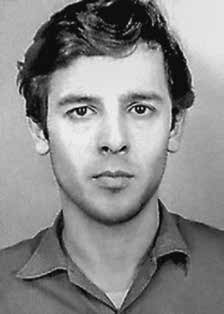

Carlos
Eduardo
Pires
Fleury
CIRCUNSTÂNCIAS DA MORTE
Carlos Eduardo Pires Fleury morreu no Rio de Janeiro, em 10 de dezembro de 1971, em circunstâncias ainda pouco esclarecidas.
De acordo com a versão oficial dos fatos apresentada pelos órgãos de repressão, Carlos teria morrido após ser atingido por disparo de arma de fogo, durante um confronto armado com agentes do Estado ocorrido nas proximidades do bairro do Méier, zona norte da cidade do Rio de Janeiro. O suposto confronto teria resultado da tentativa de fugir, após Carlos ter sido abordado por agentes do Departamento de Ordem Política e Social do Estado da Guanabara (DOPS-GB).
O corpo de Carlos Eduardo foi levado ao Instituto Médico-Legal do estado de São Paulo (IML/SP), registrado com o nome de Nelson Meirelles Riedel. De acordo com o laudo de necropsia, Carlos foi “encontrado morto no interior de um veículo com um tiro”. Entretanto, a análise do laudo de necropsia e das fotografias da perícia de local demonstrara que Carlos apresentava marcas de algemas nos pulsos, o que indica que foi preso antes de ser morto. Além disso, dos 12 tiros que recebeu, todos são frontais, o que contraria a versão de que teria sido alvejado no interior de veículo e com um único tiro fatal.
Carlos Eduardo Pires Fleury morreu em decorrência de ação de agentes do Estado brasileiro. Seus restos mortais foram enterrados no cemitério da Consolação, em São Paulo.
Carlos Eduardo Pires Fleury died in Rio de Janeiro, on December 10, 1971, under circumstances that are still unclear.
According to the official version of the events presented by the repression bodies, Carlos died after being hit by a firearm during an armed confrontation with State agents that took place near the Méier neighborhood, in the north zone of the city of Rio de Janeiro. The alleged confrontation resulted from an attempt to flee, after Carlos was approached by agents from the Department of Political and Social Order of the State of Guanabara (DOPS-GB).
Carlos Eduardo's body was taken to the Medical-Legal Institute of the state of São Paulo (IML/SP), registered under the name of Nelson Meirelles Riedel. According to the autopsy report, Carlos was “found dead inside a vehicle with a gunshot wound”. However, analysis of the autopsy report and photographs from the scene investigation showed that Carlos had handcuff marks on his wrists, which indicates that he was arrested before being killed. Furthermore, of the 12 shots he received, all were frontal, which contradicts the version that he was shot inside a vehicle and with a single fatal shot.
Carlos Eduardo Pires Fleury died as a result of actions by agents of the Brazilian State. His remains were buried in the Consolação cemetery, in São Paulo.
Carlos Eduardo Pires Fleury murió en Río de Janeiro, el 10 de diciembre de 1971, en circunstancias aún no esclarecidas.
Según la versión oficial de los hechos presentada por los órganos de represión, Carlos murió tras ser alcanzado por un arma de fuego durante un enfrentamiento armado con agentes del Estado ocurrido cerca del barrio Méier, en la zona norte de la ciudad de Río de Janeiro. El supuesto enfrentamiento se debió a un intento de huida, luego de que Carlos fuera abordado por agentes del Departamento de Orden Político y Social del Estado de Guanabara (DOPS-GB).
El cuerpo de Carlos Eduardo fue trasladado al Instituto Médico Legal del estado de São Paulo (IML/SP), registrado a nombre de Nelson Meirelles Riedel. Según el informe de la autopsia, Carlos fue “hallado muerto dentro de un vehículo con una herida de bala”. Sin embargo, el análisis del informe de la autopsia y fotografías de la investigación de la escena mostraron que Carlos tenía marcas de esposas en las muñecas, lo que indica que fue detenido antes de ser asesinado. Además, de los 12 disparos que recibió, todos fueron frontales, lo que contradice la versión de que fue baleado dentro de un vehículo y de un solo disparo mortal.
Carlos Eduardo Pires Fleury murió como consecuencia de acciones de agentes del Estado brasileño. Sus restos fueron enterrados en el cementerio de Consolação, en São Paulo.